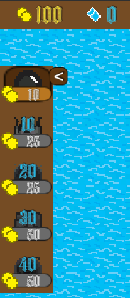

A játék lényegek
Izlandia világát kalózok fenyegetik, flottájuk túlerőben van, vérszomjuk csillapíthatatlan, egyetlen esélyünk van ellenük, taktikáznunk kell!
Az ostoba kalózok folyton dulakodnak egymás közt, így nem képesek egyszerre nagy erőket bevetni. Neves kapitányok vezetik őket csatába, akik hullámokban ostromolják birodalmunkat. Felderítőink minden csata elején megállapítják hány hullámmal, azon belül hány ellenséges hajóval lesz dolgunk, ezt az adatot a Kalózszámlálóról olvashatjuk le.
Célunk a főszigeti erőd védelme, melynek limitált erőforrásai vannak. Legjobb védekezés a támadás, stratégiai helyeken ágyúk elhelyezésével kell megállítanunk az előrenyomuló vadakat, ezt javasolja tengernagyunk, Sea Tzu tábornok.
A kalózok hajói változatosak, némely fürge, de törékeny, másik böszme, de bivalyerős. A szigetek megszerzésekor sima, vas ágyúkat tudunk csak felszerelni, de az ellenséges hajók elsüllyesztéséből nyert zsákmányokkal mi is meghatározó pusztító erőkre tehetünk szert.
Ha az utolsó kalóz is a tenger fenekére került, vagy bázisunkat kifosztották, a játék véget ér.
Kalózszámláló
Hullám-o-méter
Stratégiailag elhelyezett ágyúk
Ágyúfajták és áraik
,,Ellenséged körbevesz
Bármerre is lősz
Mindig a célra tartasz"
- Sea Tzu admirális
Végkifejlet
Az Izlandia projekt négyfős csapatba készült el. Felosztottuk a feladatokat, volt textúra készítő, programozó és tesztelő is. A projekt elején vezető szerepet vállaltam magamra, ami, mint idővel rájöttem, azzal járt, hogy sokszor nekem kellett egyes funkciókat befejezni. A limitált idő elleneére is elégedett vagyok a megszületett játékkal, ami bár nem kerül fel Steamre, minden résztvevőt remekül szórakoztatott az elkészítésével.